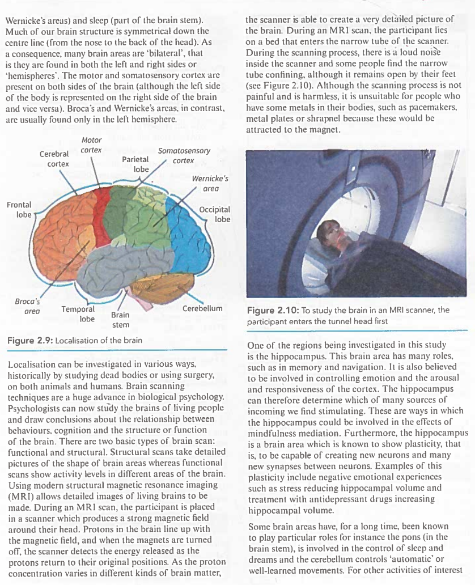
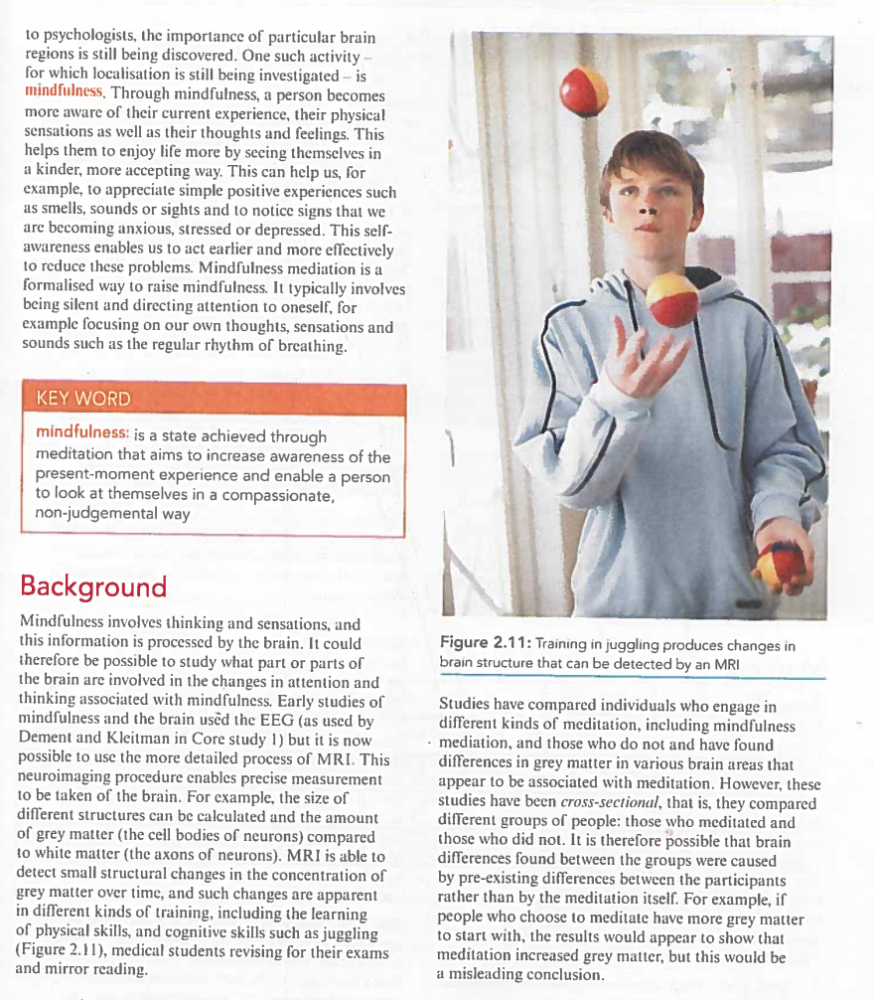
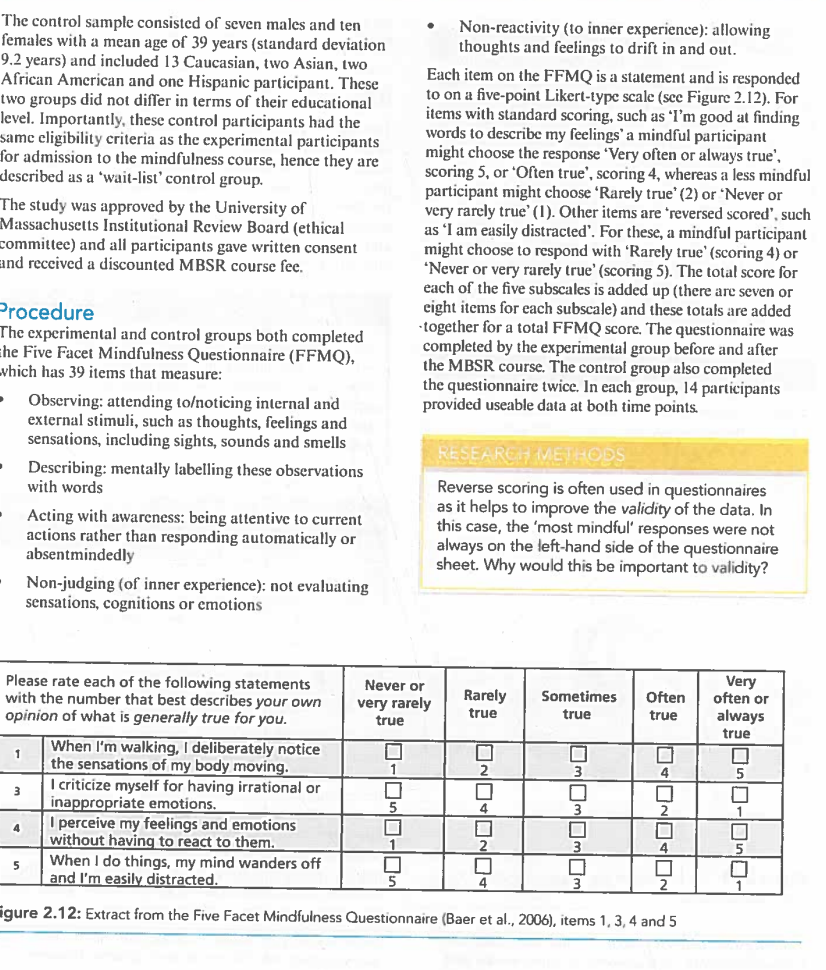
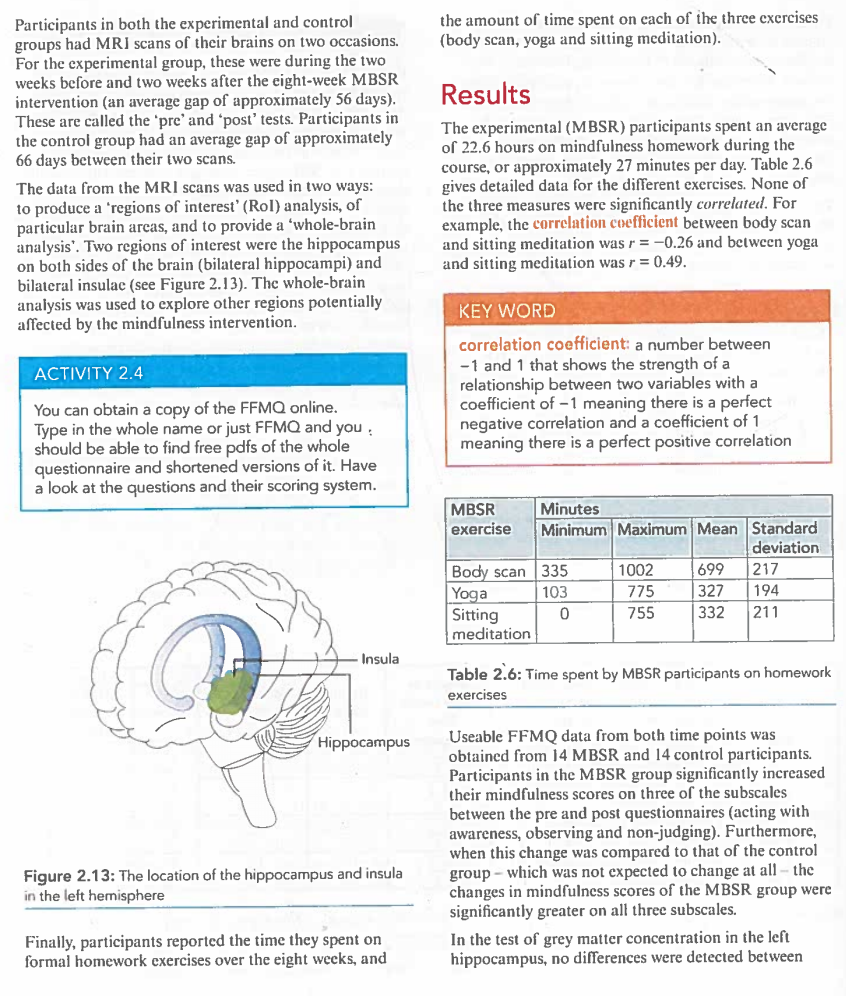

🧠 Hölzel et al. (2011)
正念练习导致大脑局部灰质密度增加
1. Background — Localisation of Function（功能定位）
Very early in the study of psychology, researchers thought that there might be meaning behind the shape of a person's skull. Nowadays, psychologists focus on the role of areas within the head, i.e. brain regions. Many parts of the brain are associated with particular types of information processing or with specific activities. This is called 'localisation of function' （功能定位）.
KEY WORD
Localisation of function （功能定位）: refers to the way that particular brain areas are responsible for different activities.
For example, Figure 2.9 shows areas responsible for deliberate movements (the motor cortex （运动皮层）), skin and muscle sensation (the somatosensory cortex （躯体感觉皮层）), language functions (Broca's and Wernicke's areas), and sleep (part of the brain stem).

Much of our brain structure is symmetrical down the centre line (from the nose to the back of the head). As a consequence, many brain areas are 'bilateral' （双侧的）, that is, they are found in both the left and right sides or 'hemispheres' （半球）. The motor and somatosensory cortex are present on both sides of the brain (although the left side of the body is represented on the right side of the brain and vice versa). Broca's and Wernicke's areas, in contrast, are usually found only in the left hemisphere.
Localisation can be investigated in various ways, historically by studying dead bodies or using surgery, on both animals and humans. Brain scanning techniques are a huge advance in biological psychology. Psychologists can now study the brains of living people and draw conclusions about the relationship between behaviours, cognition and the structure or function of the brain.
Two Basic Types of Brain Scan
- Structural scans （结构扫描）: take detailed pictures of the shape of brain areas
- Functional scans （功能扫描）: show activity levels in different areas of the brain
How MRI Works
Using modern structural magnetic resonance imaging (MRI) （结构磁共振成像） allows detailed images of living brains to be made. During an MRI scan, the participant is placed in a scanner which produces a strong magnetic field around their head. Protons in the brain line up with the magnetic field, and when the magnets are turned off, the scanner detects the energy released as the protons return to their original positions. As the proton concentration varies in different kinds of brain matter, the scanner is able to create a very detailed picture of the brain. During an MRI scan, the participant lies on a bed that enters the narrow tube of the scanner. During the scanning process, there is a loud noise inside the scanner and some people find the narrow tube confining, although it remains open by their feet. Although the scanning process is not painful and is harmless, it is unsuitable for people who have some metals in their bodies, such as pacemakers, metal plates or shrapnel, because these would be attracted to the magnet.
The Hippocampus — A Region of Interest
One of the regions being investigated in this study is the hippocampus （海马体）. This brain area has many roles, such as in memory and navigation. It is also believed to be involved in controlling emotion and the arousal and responsiveness of the cortex. The hippocampus can therefore determine which of many sources of incoming we find stimulating. These are ways in which the hippocampus could be involved in the effects of mindfulness meditation. Furthermore, the hippocampus is a brain area which is known to show plasticity （可塑性）, that is, to be capable of creating new neurons and many new synapses between neurons. Examples of this plasticity include negative emotional experiences such as stress reducing hippocampal volume and treatment with antidepressant drugs increasing hippocampal volume.
Other Localised Areas
Some brain areas have, for a long time, been known to play particular roles: for instance the pons （脑桥） is involved in the control of sleep and dreams, and the cerebellum （小脑） controls 'automatic' or well-learned movements.
2. Mindfulness（正念）
To psychologists, the importance of particular brain regions is still being discovered. One such activity — for which localisation is still being investigated — is mindfulness （正念）. Through mindfulness, a person becomes more aware of their current experience, their physical sensations as well as their thoughts and feelings. This helps them to enjoy life more by seeing themselves in a kinder, more accepting way. This can help us, for example, to appreciate simple positive experiences such as smells, sounds or sights and to notice signs that we are becoming anxious, stressed or depressed. This self-awareness enables us to act earlier and more effectively to reduce these problems.
Mindfulness meditation is a formalised way to raise mindfulness. It typically involves being silent and directing attention to oneself, for example focusing on our own thoughts, sensations and sounds such as the regular rhythm of breathing.
KEY WORD
Mindfulness （正念）: is a state achieved through meditation that aims to increase awareness of the present-moment experience and enable a person to look at themselves in a compassionate, non-judgemental way.

From EEG to MRI: The Study Background
Mindfulness involves thinking and sensations, and this information is processed by the brain. It could therefore be possible to study what part or parts of the brain are involved in the changes in attention and thinking associated with mindfulness. Early studies of mindfulness and the brain used the EEG (as used by Dement and Kleitman in Core Study 1), but it is now possible to use the more detailed process of MRI. This neuroimaging procedure enables precise measurement to be taken of the brain.
For example, the size of different structures can be calculated and the amount of grey matter （灰质） (the cell bodies of neurons) compared to white matter （白质） (the axons of neurons). MRI is able to detect small structural changes in the concentration of grey matter over time, and such changes are apparent in different kinds of training, including the learning of physical skills, and cognitive skills such as juggling (Figure 2.11), medical students revising for their exams and mirror reading.
The Problem with Earlier (Cross-Sectional) Studies
Studies have compared individuals who engage in different kinds of meditation, including mindfulness meditation, and those who do not, and have found differences in grey matter in various brain areas that appear to be associated with meditation. However, these studies have been cross-sectional （横断面的）, that is, they compared different groups of people: those who meditated and those who did not. It is therefore possible that brain differences found between the groups were caused by pre-existing differences between the participants rather than by the meditation itself. For example, if people who choose to meditate have more grey matter to start with, the results would appear to show that meditation increased grey matter, but this would be a misleading conclusion.
If you had the use of a brain scanner and could localise a function, what function would you want to locate? Explain why you would want to study this function to a partner or write an email to a psychologist to justify why they should conduct this research.
Peer assessment （同伴互评）
Present your argument to one of your peers, by email or face to face. Let them judge how convincing your argument is. Discuss with a partner whether it is an advantage for the human brain to have specialised locations for some tasks or whether there is a benefit to having tasks distributed across the brain. If you can, try taking opposing viewpoints.
3. Aim（研究目的）
4. Method（研究方法）
4.1 Research Method and Design（研究方法与设计）
This was an experiment （实验） using a longitudinal design （纵向设计）, as a group of participants was tested before (pre) and after (post) an intervention. They were also compared to a control group. The independent variable （自变量） was exposure to an eight-week mindfulness-based intervention, the Mindfulness-Based Stress Reduction (MBSR) （正念减压疗法） course.
The MBSR Course
Participants were tested pre- and post-attendance on a course consisting of a two-and-a-half-hour session each week for eight weeks, and a full day session in the sixth week. They were trained in mindfulness exercises intended to develop awareness of present-moment experiences and a compassionate non-judgemental view. The exercises included:
- 'body scan' （身体扫描）: where attention is guided in a sequence through the whole body, which ends with a perception of the body 'as a complete whole'
- 'mindful yoga' （正念瑜伽）: which includes gentle stretching and slow movements, and breathing exercises, which aim to raise awareness of the moment-to-moment experience
- 'sitting meditation' （静坐冥想）: which focuses on the sensation of breathing, and progresses to sounds, sights, tastes, other body sensations, as well as thoughts and emotion
A 45-minute recording of these guided mindfulness exercises was given to each participant with the instruction to practise them daily at home (their 'homework'). In the sessions, participants attended guidance was given for how to engage in mindfulness in everyday life, such as while eating, walking, washing the dishes or taking a shower. Instruction was also given on how to use mindfulness to cope with stress in daily life.
The main dependent variable （因变量） was the change in grey matter assessed using MRI scans. In addition, participants completed questionnaires （问卷） to measure five mindfulness scales (both before and after the intervention).
4.2 Sample（样本）
Participants were recruited from people already enrolled on MBSR courses at the University of Massachusetts. They enrolled to help with stress reduction either because they had chosen to attend the course or had been referred by their doctor. All participants described themselves as physically and psychologically healthy and not taking medication. In addition, they had limited experience of meditation classes (none in the last six months and a maximum of four in the last 5 years, or ten in their lifetime), were aged 25–55 years, were safe to have an MRI scan (e.g. no metal in their bodies and not claustrophobic) and committed to attend all sessions and complete the homework exercises.
| Characteristic | Experimental (MBSR) Group | Control (Wait-List) Group |
|---|---|---|
| Initial size | 18 (8 males, 10 females) → 16 (2 males withdrew) | 17 (7 males, 10 females) |
| Mean age | 38 years (SD = 4.1) | 39 years (SD = 9.2) |
| Ethnicity | 13 Caucasian, 1 Asian, 1 African American, 1 multi-ethnic | 13 Caucasian, 2 Asian, 2 African American, 1 Hispanic |
| Selection | Self-selected / doctor-referred, already enrolled on MBSR | Same eligibility criteria — a 'wait-list' （候补名单） control |
| Education | The two groups did not differ in terms of their educational level | |
The study was approved by the University of Massachusetts Institutional Review Board (ethical committee) and all participants gave written consent and received a discounted MBSR course fee.
5. Procedure（实验程序）
The Five Facet Mindfulness Questionnaire (FFMQ)
The experimental and control groups both completed the Five Facet Mindfulness Questionnaire (FFMQ) （五因素正念度量表）, which has 39 items that measure:
- Observing （观察）: attending to/noticing internal and external stimuli, such as thoughts, feelings and sensations, including sights, sounds and smells
- Describing （描述）: mentally labelling these observations with words
- Acting with awareness （有觉知地行动）: being attentive to current actions rather than responding automatically or absentmindedly
- Non-judging （不评判） (of inner experience): not evaluating sensations, cognitions or emotions
- Non-reactivity （不反应） (to inner experience): allowing thoughts and feelings to drift in and out

How the FFMQ Is Scored
Each item on the FFMQ is a statement and is responded to on a five-point Likert-type scale. For items with standard scoring, such as 'I'm good at finding words to describe my feelings', a mindful participant might choose the response 'Very often or always true', scoring 5, or 'Often true', scoring 4, whereas a less mindful participant might choose 'Rarely true' (2) or 'Never or very rarely true' (1). Other items are 'reversed scored', such as 'I am easily distracted'. For these, a mindful participant might choose to respond with 'Rarely true' (scoring 4) or 'Never or very rarely true' (scoring 5). The total score for each of the five subscales is added up (there are seven or eight items for each subscale) and these totals are added together for a total FFMQ score. The questionnaire was completed by the experimental group before and after the MBSR course. The control group also completed the questionnaire twice. In each group, 14 participants provided useable data at both time points.
MRI Scanning Schedule
Participants in both the experimental and control groups had MRI scans of their brains on two occasions. For the experimental group, these were during the two weeks before and two weeks after the eight-week MBSR intervention (an average gap of approximately 56 days). These are called the 'pre' and 'post' tests. Participants in the control group had an average gap of approximately 66 days between their two scans.
Regions of Interest (RoI) and Whole-Brain Analysis
The data from the MRI scans was used in two ways: to produce a 'regions of interest' (RoI) analysis, of particular brain areas, and to provide a 'whole-brain analysis'. Two regions of interest were the hippocampus on both sides of the brain (bilateral hippocampi) and bilateral insulae (see Figure 2.13). The whole-brain analysis was used to explore other regions potentially affected by the mindfulness intervention.

Finally, participants reported the time they spent on formal homework exercises over the eight weeks, and the amount of time spent on each of the three exercises (body scan, yoga and sitting meditation).
You can obtain a copy of the FFMQ online. Type in the whole name or just FFMQ and you should be able to find free pdfs of the whole questionnaire and shortened versions of it. Have a look at the questions and their scoring system.
6. Results（研究结果）
Homework Practice Time
The experimental (MBSR) participants spent an average of 22.6 hours on mindfulness homework during the course, or approximately 27 minutes per day. Table 2.6 gives detailed data for the different exercises. None of the three measures were significantly correlated. For example, the correlation coefficient （相关系数） between body scan and sitting meditation was r = −0.26 and between yoga and sitting meditation was r = 0.49.
KEY WORD
Correlation coefficient （相关系数）: a number between −1 and 1 that shows the strength of a relationship between two variables, with a coefficient of −1 meaning there is a perfect negative correlation and a coefficient of 1 meaning there is a perfect positive correlation.
| MBSR exercise | Minutes Minimum | Minutes Maximum | Mean | Standard deviation |
|---|---|---|---|---|
| Body scan | 335 | 1002 | 699 | 217 |
| Yoga | 103 | 775 | 327 | 194 |
| Sitting meditation | 0 | 755 | 332 | 211 |
Table 2.6 （MBSR练习作业时间）: Time spent by MBSR participants on homework exercises.
FFMQ Questionnaire Results
Useable FFMQ data from both time points was obtained from 14 MBSR and 14 control participants. Participants in the MBSR group significantly increased their mindfulness scores on three of the subscales between the pre and post questionnaires (acting with awareness, observing and non-judging). Furthermore, when this change was compared to that of the control group – which was not expected to change at all – the changes in mindfulness scores of the MBSR group were significantly greater on all three subscales.
Regions of Interest Findings
In the test of grey matter concentration in the left hippocampus, no differences were detected between the MBSR and control groups at the start of the study (i.e. at the pre-test stage). Nor were there any changes in grey matter concentrations in the control group between the two test points. Importantly, changes in this region of interest were detected in the MBSR group between the pre- and post-tests, based on a group size of 16 (see Table 2.7). This change did not, however, correlate with either the amount of homework completed by the participant or changes in their FFMQ scores. The grey matter concentration in other regions of interest did not show significant changes between the pre- and post-intervention tests.
Grey Matter Changes Compared
| Region of interest | Approximate changes in grey matter concentration | ||||
|---|---|---|---|---|---|
| Left hippocampus | Posterior cingulate cortex | Left temporo-parietal junction | Lateral cerebellum | Cerebellar vermis/brainstem | |
| MBSR group | + 0.01 | + 0.01 | + 0.007 | + 0.015 | + 0.014 |
| Control group | + 0.001 | − 0.005 | − 0.002 | + 0.001 | − 0.001 |
Table 2.7 （灰质浓度变化）: Changes in grey matter concentration in the brains of MBSR and control participants.
Whole-Brain Analysis Findings
The results from the whole-brain analysis also revealed changes. Four clusters in the brains of participants in the MBSR group were found to have significantly increased in grey matter concentration between the pre- and post-tests. These clusters were in the posterior cingulate cortex, the left temporo-parietal junction and in two parts of the cerebellum (the lateral cerebellum and the cerebellar vermis/brainstem) as shown in Table 2.7. These differences were also significantly greater than changes in corresponding areas of the brains of participants in the control group. As with the regions of interest findings, there were no correlations between the changes in these four areas and the amount of homework completed by the participant or changes in their FFMQ scores. In the MBSR group, no parts of the brain were found to have significant decreases in grey matter concentration after the MBSR intervention although there were some small reductions in grey matter concentration in the control group over the study period.
7. Conclusion（结论）
The results from the regions of interest findings show that structural changes in the left hippocampus arise within an eight-week period of participation in a mindfulness course. This finding suggests that localised increases or decreases in hippocampal volume that have been demonstrated in other situations may happen in response to mindfulness meditation. Since the hippocampus plays a role in learning and memory, this suggests that during the MBSR course participants had learning experiences that changed the hippocampal grey matter.
Furthermore, increases in grey matter concentration in the left temporo-parietal junction (TJP), posterior cingulate cortex (PCC), and cerebellum of the MBSR group but not the control group also suggest that participation in an eight-week mindfulness course causes structural changes in these brain regions. Although not specifically predicted, these findings reflect other research that has shown the involvement of these areas in responses linked to mindfulness.
Why These Particular Areas?
The TJP is important in the way we see ourselves or 'self-referential processing' （自我参照加工）, for example the unity of our sense of self and our physical body. When processing in the TJP is impaired, this self-referential system can become faulty and can lead to out-of-body experiences. This links to the role of mindfulness training in learning to perceive the body as a 'complete whole'. Similarly, the PCC has a role in the way we judge the relevance of stimuli to ourselves, for example assessing how important an experience is to our emotional or autobiographical context. These functions arise in mindfulness too, for example in noticing internal and external stimuli and being attentive to moment-to-moment experiences of such stimuli.
In addition, one of the key areas of the cerebellum identified as changing due to the mindfulness practice has a role in regulating emotions and cognition for healthy psychological functioning. The areas of the hippocampus, TPJ and PCC were found to change in response to the mindfulness intervention, and together with parts of the prefrontal cortex, form a brain network with many related functions, such as recalling the past, thinking about the future, and considering others' viewpoints such as in turn-taking. Together, these areas contribute to the way that autobiographical information enables the individual to consider alternative perspectives. This is a crucial step in achieving a mindful state.
Result = "灰质浓度在左侧海马体平均增加 +0.01，控制组无变化"（测到的数字）
Conclusion = "八周正念课程会导致这些脑区的结构性变化"（对因果的推断）
考官报告中把两者混写是 9990 最常见失分点之一。永远先报数字，再做推断。
8. Evaluation（评价）
Strengths
The control participants met the same eligibility criteria as the experimental participants for admission to the mindfulness course, and the two groups did not differ in educational level. Crucially, at the pre-test stage no differences in grey matter concentration in the left hippocampus were detected between the groups, and the control group showed no changes in grey matter between their two scans (an average gap of 66 days). This means the increases found in the MBSR group could not simply be attributed to the passage of time or to pre-existing differences between the groups, strengthening the conclusion that the intervention itself produced the changes.
Earlier studies in this area were cross-sectional: they compared people who already meditated with people who did not, so any differences in grey matter could have been caused by pre-existing participant variables — for example, people who choose to meditate may simply have more grey matter to start with. By scanning the same participants before and after the eight-week course, Hölzel et al. could be far more confident that the observed changes were produced by the intervention rather than by the kind of people who take up meditation. The longitudinal design also allowed time for the experiences of the course to affect brain plasticity in a measurable way.
The MRI scanner measured grey matter concentration directly, providing quantitative data that enabled statistical comparisons between pre- and post-test levels and between the MBSR and control groups (see Table 2.7). The recorded volumes themselves do not need the researcher to interpret them, so the data are objective. Importantly, it would not be possible for participants to alter their grey matter volume in response to demand characteristics — even if they guessed the aim of the study, they could not consciously change their brain structure — which increases the validity of the data collected.
The intervention was highly standardised: the eight-week MBSR course followed a fixed structure (a two-and-a-half-hour session each week plus a full day session in the sixth week); every participant practised with the same 45-minute recording of guided exercises (body scan, mindful yoga, sitting meditation); the same 39-item FFMQ was administered twice to both groups; and MRI scans took place at fixed intervals (approximately 56 days for the experimental group). Because the procedure was so carefully specified, another researcher could replicate the study to test whether the same pattern of grey matter change is found.
Weaknesses
Participants were recruited from people already enrolled on MBSR courses — they had chosen to attend or been referred by their doctor because they were experiencing stress, so the sample was self-selected. The initial experimental sample of 18 (8 males, 10 females) fell to 16 when two males withdrew after the first MRI scan due to discomfort, and the remaining sample was mostly Caucasian (13 of 16) and aged 25–55. Because all participants were stressed volunteers seeking help, the findings may not generalise to the wider population — for example, to people who are not experiencing stress or who did not choose to take a mindfulness course.
In every brain area examined, the increases in grey matter did not correlate either with the amount of homework completed (a mean of 22.6 hours; individual exercise totals ranged from 0 to 1002 minutes) or with changes in FFMQ scores. This suggests that the number of minutes spent in mindfulness practice is not the direct cause of the brain changes; the researchers propose that the effect is mediated by the MBSR programme as a whole. Without a further control group receiving only the non-mindfulness-specific parts of the course (e.g. seven weekly sessions plus a full day of social contact believed to reduce stress), the specific effect of mindfulness meditation itself cannot be isolated.
Although the recorded volumes are objective, there are still many unknowns about the localisation of specific behaviours in the brain and the meaning of changes in volume. Mapping neural changes onto changes in thoughts and emotions is far less objective than the measurement itself, so we must be careful not to infer too much from the MRI results. In addition, the experience of being in an MRI scanner — noisy and confining — is hardly ecologically valid, and these features are potentially emotional and therefore relevant: the brain is being measured in an unnatural situation.
All of the participants were experiencing stress, identified through doctor- or self-referral. Those allocated to the control group had to wait at least eight weeks before they could receive assistance, and this delay in help risks a failure to protect participants from harm. It is unknown whether there was capacity for them to begin the course earlier, so this may have been an issue beyond the researchers' control — but the wait-list design still meant that stressed participants were knowingly left without treatment for the duration of the study.
📋 Exam Key Points — Evaluation (AO3)
- Must Know [Control of Variables] Strength: wait-list control with the same eligibility criteria; no pre-test group differences; no change in the control group over time
- Must Know [Validity] Strength: longitudinal pre/post design of the same participants overcomes the participant variables that confounded earlier cross-sectional studies
- Common [Types of Data] Strength: objective quantitative MRI data; grey matter cannot be altered by demand characteristics
- Common [Reliability] Strength: standardised 8-week MBSR course, same 45-minute recording, FFMQ twice, fixed scan intervals (~56 days)
- Must Know [Sampling] Weakness: small self-selected sample (16 after two withdrew) of stressed volunteers, mostly Caucasian, aged 25–55
- Must Know [Validity] Weakness: grey matter increases did not correlate with homework minutes or FFMQ change — the effect of meditation itself is not isolated
- Common [Validity] Weakness: the meaning of volume change is interpretive; the scanner is noisy and confining (low ecological validity)
- Common [Ethics] Weakness: wait-list controls waited at least eight weeks for stress treatment
9. Ethical Issues（伦理问题）
This study raised few ethical issues. To ensure the participants were protected during scanning, none accepted for the study had any metal implants, which could present a risk of physical harm, or claustrophobia, which could present a risk of psychological harm. Also, following their right to withdraw （退出权）, two participants left the study after the first MRI scan as they found the procedure uncomfortable.
All of the participants were experiencing stress, identified through doctor- or self-referral. The participants allocated to the control group had to wait for at least eight weeks before they could receive assistance. This delay in help again risks a failure to protect participants from harm （保护参与者免受伤害）. However, it is unknown whether there was capacity for people to begin the course in advance of this time, so this may have been an issue beyond the researchers' control.
🀄 本节中文总结
- 扫描前筛查排除了金属植入物与幽闭恐惧症 → 规避身体/心理伤害风险
- 两名男性第一次MRI后行使退出权 → 退出权得到尊重（样本18→16）
- 唯一争议点：候补名单控制组被迫等待至少8周才获得减压帮助 → "保护参与者免受伤害"存疑
10. Issues, Debates and Approaches（议题、争论与取向）
10.1 The Application of Psychology to Everyday Life（心理学在日常生活中的应用）
Mindfulness is encouraged for not just stress reduction but potentially for helping people to sleep and improving physical health. By understanding the brain changes associated with mindfulness, combined with knowledge of the roles of the areas of the brain affected, mindfulness techniques, and their benefits, can be improved.
10.2 Individual and Situational Explanations（个体与情境解释）
The study by Hassett et al. demonstrated a clear role for biology, but also recognises that this interacts with the situational effects of exposure to gender stereotyping within society. Both through cultural expectations and the direct reinforcement and punishment of 'gender-appropriate' or 'inappropriate' behaviours, and through sheer exposure to gender stereotypes.
In Hölzel et al.'s study, the individual (biological) explanation is dominant: changes in grey matter were measured within each participant's own brain. But a situational reading is also possible — the brain changes may have been produced by the situation of attending the course (group sessions, a teacher, daily homework structure) rather than by any individual quality of the meditator. This is precisely why the lack of a correlation between homework minutes and grey matter change matters.
10.3 Nature versus Nurture（先天与后天）
The biological approach focuses mainly on the nature side of this debate, which is why it is possible to obtain evidence through procedures like the EEG, which was used in the Dement and Kleitman study to measure brain waves and eye movements. It is useful to be able to collect physiological evidence about brain activity as it provides direct evidence for the underlying biological processes, such as the link between dream content and eye movements.
Dream content relates to our experiences, so is a product of nurture. This, at least partly, explains the differences in dreams between individuals. Nurture influences will vary; thus, the content of people's dreams will differ. However, as even a foetus in the uterus experiences REM sleep, the capacity to dream appears to be a product of nature. Similarly, the biological processes underlying emotions are the product of the brain and of hormones.
Hölzel et al.'s study also has a clearly 'biological' focus on brain structure. This is determined largely by processes of nature, hence the similarities between individuals and even between humans and animals. However, Hölzel et al. demonstrated that the experience of the MBSR programme changed brain structure. This is an effect of nurture and shows that even those structures and processes that seem highly constrained by biology can be influenced by experience.
Nature Arguments 先天
- Brain structure is largely genetically constrained — hence cross-species similarities
- Hippocampal plasticity itself is a biological capacity (some brain areas change, others don't)
- Individual differences in FFMQ scores and homework compliance partly reflect temperament
Nurture Arguments 后天
- Eight weeks of experience measurably changed grey matter — experience rewired the brain
- Stress (an experience) reduces hippocampal volume; antidepressants increase it — environment shapes structure
- Changes appeared only in the MBSR group, not the wait-list controls — the intervention (environment) was the difference
🀄 Hölzel 在先天/后天争论中的立场
- 表面看是"先天"研究（脑结构、生物取向），但结论恰恰证明了后天经验可以改变先天结构
- 这是本实验最具颠覆性的价值：连"最生物"的东西（灰质密度）都被8周的经验重塑了
- 对照 Hassett et al.（先天激素影响的持久性）正好像镜子两面 — 考试里对比两研究是高频题
10.4 The Use of Children and Animals in Psychological Research（儿童与动物研究）
The study by Hassett et al. demonstrated a common technique, the use of comparative psychology. This is a process of finding evidence that helps to explain human behaviour by comparison to animal models. As non-human animals are less complex than humans, and their environment and experiences can be controlled, they provide a way to investigate the origins of human behaviours. This study was able to isolate the effect of biology (hormones) and experience (socialisation) to help to explore the causes of gender differences in children. Apart from the practical benefits, the use of animals both solves and raises ethical issues. It could be argued that it is or that it is not ethically acceptable to manipulate the environments of rhesus monkeys, whereas it would certainly be ethically unacceptable to manipulate the experiences of children such that they were not exposed to culturally driven socialisation.
In addition, it is useful to consider whether the other studies in this section could have used animals and what the findings might have shown. If you have a mammal for a pet, you may have seen it apparently dreaming about running as it moves its legs, making quiet sounds or twitching its nose. Non-human animals such as mammals do demonstrate REM sleep, and this has been studied extensively. It is very difficult, however, to determine the content of their dreams. This has been done indirectly, by using brain-cell recording techniques to explore repeated waking behaviours (such as bird song and rats running mazes). It has been found that the patterns of brain activity during sleep closely resemble those of the waking behaviours, indicating what the animals are dreaming about.
11. Summary（总结）
Hölzel et al.'s study was an experiment using a longitudinal design. This tested exposure to an eight-week Mindfulness-Based Stress Reduction (MBSR) intervention, in comparison to a wait-list control condition. Participants in the intervention group kept a record of their mindfulness activities. All participants were given two tests at the start and end of the time period: an MRI scan to measure grey matter concentration in the brain and a questionnaire testing mindfulness. Brain areas found to increase in the MBSR participants compared to the controls were the left hippocampus, PCC, TPJ and cerebellum. The mindfulness scores of the MBSR group but not the controls increased, however, this increase did not correlate with brain changes. The findings suggest that an MBSR intervention can cause changes in grey matter concentration in brain areas that play roles in learning, memory, self-referential processing, emotions and considering the viewpoints of others.
Quick Recap
| Researchers | Hölzel, Carmody, Vangel, Congleton, Yerramsetti, Gard & Lazar (2011) |
| Method | Experiment — longitudinal pre/post design + wait-list control |
| Sample | 16 (8M/10F → 2 withdrew), mean age 38; control 17, mean age 39 |
| IV | 8-week MBSR course (2.5 h/week + full day in week 6) |
| DV | Grey matter concentration (MRI) + FFMQ scores (39 items, 5 facets) |
| Main result | Left hippocampus + 5 regions increased in MBSR only; no correlation with homework/FFMQ |
| Homework | Mean 22.6 h (~27 min/day) over 8 weeks |
| Approach | Biological — Localisation of Function & Plasticity |
🀄 全文中文总结
- 设计：纵向实验 + 候补名单控制组（同资格标准），克服了早期横断面研究的参与者变量问题
- 程序：8周MBSR课程（每周2.5小时+第6周全天），每天45分钟录音作业；前后两次MRI+两次FFMQ
- 结果：MBSR组左侧海马体灰质显著增加（+0.01），另4个脑区（PCC、TPJ、小脑两区）也增加；控制组无变化
- 关键细节：脑变化与作业时间、FFMQ变化均不相关 → 说明起效的是课程整体而非练习分钟数
- 结论：8周正念课程足以改变与学习、记忆、自我参照加工、情绪相关的脑区结构 → 经验（后天）重塑大脑（先天结构）
12. Key Terms（关键词表）
| Term | Definition |
|---|---|
| Localisation of function （功能定位） | The way that particular brain areas are responsible for different activities |
| Motor cortex （运动皮层） | The brain area responsible for deliberate movements |
| Somatosensory cortex （躯体感觉皮层） | The brain area responsible for skin and muscle sensation |
| Bilateral （双侧的） | Found in both the left and right sides of the brain |
| Hemisphere （半球） | One half of the brain |
| MRI （磁共振成像） | Magnetic resonance imaging; a technique used to scan the brain |
| Structural scan （结构扫描） | A scan that takes detailed pictures of the shape of brain areas |
| Functional scan （功能扫描） | A scan that shows activity levels in different areas of the brain |
| Hippocampus （海马体） | A brain area involved in memory, navigation, emotion and arousal |
| Plasticity （可塑性） | The brain's ability to change and form new neurons and synapses |
| Cerebellum （小脑） | The brain area that controls automatic or well-learned movements |
| Pons （脑桥） | The brain area involved in the control of sleep and dreams |
| Mindfulness （正念） | A state achieved through meditation that increases awareness of the present moment |
| Grey matter （灰质） | The cell bodies of neurons |
| White matter （白质） | The axons of neurons |
| Cross-sectional （横断面的） | A study comparing different groups of people at one point in time |
| Longitudinal design （纵向设计） | A study testing the same participants over a period of time |
| Experiment （实验） | A research method that investigates cause and effect |
| Independent variable （自变量） | The variable that is manipulated by the researcher |
| Dependent variable （因变量） | The variable that is measured by the researcher |
| MBSR （正念减压疗法） | Mindfulness-Based Stress Reduction |
| Independent measures design （独立测量设计） | Different participants are used in each condition of an experiment |
| Sample （样本） | The group of participants selected for a study |
| Mean （平均数） | A measure of central tendency calculated by dividing the total by the number of items |
| Standard deviation （标准差） | A measure of dispersion showing how spread out data are around the mean |
| Wait-list control group （候补名单控制组） | A control group that receives the same treatment after the study is completed |
| FFMQ （五因素正念度量表） | Five Facet Mindfulness Questionnaire |
| Correlation coefficient （相关系数） | A number between −1 and 1 showing the strength and direction of a relationship |
| Quantitative data （定量数据） | Numerical data that can be analysed statistically |
| Ecological validity （生态效度） | The extent to which findings can be generalised to real-life settings |
| Demand characteristics （要求特征） | Cues in a study that make participants guess the aim and change their behaviour |
| Objective data （客观数据） | Data that is not influenced by the researcher's interpretation |
| Right to withdraw （退出权） | The ethical right of participants to leave a study at any time |
| Participant variables （参与者变量） | Individual differences between participants that may affect results |
| Self-referential processing （自我参照加工） | The way we see ourselves and judge the relevance of stimuli to ourselves |
| Temporo-parietal junction (TPJ) （颞顶联合区） | A brain area involved in self-referential processing |
| Posterior cingulate cortex (PCC) （后扣带皮层） | A brain area involved in judging the relevance of stimuli to ourselves |
| Insula （脑岛） | A brain area involved in awareness of internal bodily states |
Study Questions（复习题）
- What is meant by 'localisation of function'?
- What type of brain scan did Hölzel et al. use?
- What is the difference between a structural and a functional brain scan?
- What was the aim of the study by Hölzel et al.?
- What was the independent variable in Hölzel et al.'s study?
- What was the dependent variable in Hölzel et al.'s study?
- Describe the sample used in Hölzel et al.'s study.
- What controls did Hölzel et al. use in their experiment?
- Why was Hölzel et al.'s longitudinal study more valid than the earlier cross-sectional studies?
- What 'homework' did Hölzel et al.'s experimental participants do?
- How sure were Hölzel et al. that it was this homework that produced the brain changes they found?
- Which brain areas showed increased grey matter concentration in the MBSR group?
13. Exam-Style Questions（考试题型）
- Biyu is planning a study on dreams and is concerned about a problem: if her participants know the aim, they might make dreams up to please her.
- i. State the type of problem that Biyu is concerned about. [1]
- ii. Explain why this would be a problem. [1]
- b. Biyu had decided to solve this problem by telling her participants the study was about insomnia, but her teacher says she cannot do this. Explain why Biyu's teacher has said this. [3]
Show Model Answer
i. Demand characteristics. [1]
ii. If participants guess the aim, they may report dreams that fit what they believe the researcher wants to hear rather than what they actually dreamed, so the data would not reflect true dreaming — lowering the validity of the findings. [1]
b. Telling participants the study is about insomnia when it is really about dreams is deception. This means participants cannot give fully informed consent, because they do not know the true aim of the research. Deception is only acceptable when it is scientifically necessary and participants are fully debriefed afterwards. Biyu's teacher has said this because the deception is unnecessary — the aim can be concealed in less harmful ways (e.g. not telling participants the specific hypothesis) rather than actively lying to them, so the ethical guideline would be breached for no good reason. [3]
- Karl is aiming to find out whether people sleep for longer because they have eaten more. He plans to do a correlation, asking people how much they have eaten during the day and how long they sleep for that night. Karl's teacher says this will not work.
- a. Suggest why Karl will not be able to use the information he obtains from his study to come to a conclusion about his aim. [2]
- b. Karl decides to do the study anyway. Explain how he could operationalise the variables of sleeping and eating. [4]
Show Model Answer
a. A correlation can only show that two variables are related — it cannot establish cause and effect. Even if people who eat more also sleep longer, Karl cannot conclude that eating caused the longer sleep: a third variable (e.g. exercise, stress, illness) could affect both, or the direction could even be reversed. So he cannot conclude that people sleep longer because they have eaten more. [2]
b. Eating could be operationalised as the number of calories consumed during the day, recorded using a food diary completed at each meal (or the total weight of food eaten per day). Sleeping could be operationalised as the number of hours of sleep that night, measured objectively with an actigraph worn on the wrist overnight (or recorded in a sleep diary completed immediately on waking). Stating the exact measure for each variable makes them testable. [4]
- There are some ethical problems with the study by Hassett et al. and also some ethical strengths. Outline one ethical strength of this study. [2]
Show Model Answer
The monkeys were tested in their own social groups in their normal outdoor enclosure; the researchers only placed two sets of toys and filmed from about 10 metres away. There was no capture, no isolation and no invasive procedure, so the monkeys' daily life was not disrupted beyond the presence of the toys. This means no physical harm or deliberate stress was caused, protecting the animals' welfare. [2]
- Compare the biological approach and the learning approach to show two ways in which they are different. Use the study by Hassett et al. as an example of the biological approach. [4]
Show Model Answer
Difference 1 — focus of explanation: The biological approach explains behaviour in terms of physiological structures and processes (hormones, brain areas, genes), seeing behaviour as largely innate (nature). In Hassett et al., sex-typed toy preferences were linked to prenatal androgen exposure. The learning approach explains behaviour as acquired through experience — reinforcement, punishment and observational learning (nurture), e.g. Bandura et al. explain aggression as learned by watching a model.
Difference 2 — methods of investigation: The biological approach uses physiological measurement — Hassett et al. used a field experiment with cameras and behavioural checklists, drawing on hormonal data to infer androgen exposure. The learning approach uses controlled experiments observing behaviour directly — Bandura et al. observed and counted children's imitation of an adult model's aggression. [4]
- Simi is using a brain scan to investigate localisation of autobiographical memories. These are the memories we have of our own lives.
- a. Explain how Simi could decide which brain areas to study. [2]
- b. Suggest why it would be important for Simi to use participants who had clear autobiographical memories. [2]
Show Model Answer
a. Simi should base her choice on previous research evidence: brain areas that earlier studies have already implicated in autobiographical memory (e.g. the hippocampus and medial temporal lobe) become her regions of interest. This is exactly what Hölzel et al. did when they chose the hippocampus, because prior work linked it to memory and emotion. [2]
b. If all participants have clear autobiographical memories, any differences in brain activity detected are more likely to reflect the processing of autobiographical memories rather than individual differences in memory ability. If some participants could barely recall their own lives, the scan differences might be due to memory impairment — a confounding variable — lowering the validity of the localisation. [2]
- From the study by Hölzel et al., explain whether the sample of participants used was representative or non-representative. [2]
Show Model Answer
The sample was largely non-representative. The experimental sample was small (16 after two males withdrew), self-selected (participants were already enrolled on MBSR courses, having chosen to attend or been referred by their doctor because of stress), mostly Caucasian (13 of 16) and aged 25–55. Because all were stressed volunteers seeking help, the findings may not generalise to people who are not experiencing stress or to other age and ethnic groups — although the roughly balanced gender mix and the matched wait-list control group make it partially representative of stressed adults seeking help. [2]
- Evaluate the study by Dement and Kleitman, including two strengths and two weaknesses. [10]
Show Model Answer
Strength 1 [Control of Variables]: High experimental control in the sleep laboratory — participants avoided caffeine and alcohol, slept in a dark quiet room, and were woken instantly by a doorbell, reducing confounding variables and demand characteristics (participants were not told their EEG or eye-movement state).
Strength 2 [Types of Data]: Objective quantitative data from EEG and EOG (brain-wave frequency, direction and amount of eye movement) combined with qualitative dream narratives, giving a richer picture than either alone.
Weakness 1 [Sampling]: Only 9 participants (7M, 2F), with just 5 studied in detail — a tiny volunteer sample that limits generalisability.
Weakness 2 [Validity]: The correlation between REM duration and narrative length (r = 0.4–0.71) does not prove causation; and the lab setting with electrodes produces low ecological validity — people may sleep and dream differently wired up in a lab.
Conclusion: The high control and objective measures give the study strong internal validity, but the small sample and artificial setting limit how far the findings generalise to normal dreaming in everyday life.
Full version with syllabus-dimension tags: see the Dement & Kleitman Evaluation section. [10]
[Total: 33]
🎯 Practice — Hölzel et al. (2011)
Evaluate the study by Hölzel et al. (2011) on mindfulness practice and increases in regional brain grey matter density, including two strengths and two weaknesses. [10]
Show Model Answer
Hölzel et al. conducted an experiment with a longitudinal design, testing the same participants before and after an eight-week MBSR course and comparing them with a wait-list control group. The study has several strengths and weaknesses when judged against the CIE research-methods criteria.
Strength 1 [Control of Variables]: The wait-list control group met the same eligibility criteria as the experimental participants, and at the pre-test no group differences in left hippocampus grey matter were detected, while the control group showed no change across their two scans. This rules out the passage of time or pre-existing group differences as explanations, so the grey matter increases in the MBSR group can be attributed to the intervention with more confidence.
Strength 2 [Types of Data]: The dependent variable was measured with an MRI scanner, producing objective quantitative data that enabled statistical comparisons (pre vs post; MBSR vs control). The recorded volumes do not depend on the researcher's interpretation, and participants could not alter their grey matter in response to demand characteristics — even if they guessed the aim, they could not consciously change their brain structure.
Weakness 1 [Sampling]: The experimental sample was small and self-selected — 16 participants (after two males withdrew due to discomfort in the scanner), recruited from people already enrolled on MBSR courses because they were experiencing stress, mostly Caucasian (13 of 16) and aged 25–55. Findings from stressed volunteers may not generalise to the wider population.
Weakness 2 [Validity]: The grey matter increases did not correlate with the amount of homework completed (mean 22.6 hours) or with changes in FFMQ mindfulness scores, suggesting that minutes of practice were not the direct cause of the brain changes — the effect may be mediated by the MBSR programme as a whole (e.g. social contact, expecting to feel better). The specific effect of mindfulness meditation itself therefore cannot be isolated.
Conclusion: Overall, the longitudinal design with a matched control makes this study considerably more valid than the earlier cross-sectional studies of meditation, but the small self-selected sample and the unexplained absence of dose–effect correlations mean the conclusion that mindfulness itself changes the brain should be drawn with caution. [10]